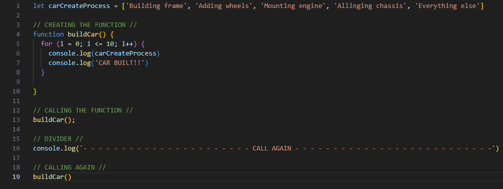

Technical Blog - JS Fundamentals
Sprint 3 Technical Blog
25 June 2025
JavaScript and its relationship to HTML and CSS
Think of a website as if it were a building. HTML is the foundations and core structure of the building, CSS is the interior and exterior design (wallpaper, pictures, logos, etc), and JavaScript is the functionality of the building, elevator, lightswitches, electrical sockets, etc.
Control flow and Loops
Control flow in JavaScript is essentially the order that bits of code within a program are run in. Control flow allows us to set certain data to loop if particular conditions or data conditions are met.
To put these terms into an example from everyday life we can look at control flow like a calendar/clock. Every week starts on Monday, and if it is Monday, the 1st of January today, then tomorrow will be Tuesday (2nd of January). If it is Tuesday today then tomorrow will be Wednesday (3rd of January). If it's Wednesday today then tomorrow will be Thursday (4th of January), so on and so forth, up until Sunday (7th of January). Then on Sunday we know we have reached the end of the week, and that on the 8th of January, we should start a new week.
So the loop repeats, the 8th of January is a monday, and we repeat this process again and again. In this situation, the condition that calls for the beginning of a new week is Sunday at 11:59:59pm. As soon as the time ticks over to 12:00:00am a new week starts, repeating the loop yet again and making it a Monday again. We can use calendars and clocks to interpret when the loop of a new week will start. We simply look at the date and time and we can be sure of when the next condition will be met, in x amount of hours, y amount of days.
To take it another step further, we know that a leap year occurs almost every 4 years. In a leap year February has 29 days, rather than 28. So the condition for a leap year is 4 calendar years. Which will result in February having 29 days, and then 28 days each year, up until the next leap year condition occurs; which will then repeat the loop.
The DOM (Document Object Model)
The DOM (Document Object Model) is an object representation of an entire HTML document. The DOM is sort of like the glue that ties HTML, CSS, and JavaScript together, it's how we interact with those three. Unlike HTML, CSS, and JavaScript, the DOM is not a programming language. However, without it the JavaScript programming language wouldn't have any model or way to interact with web pages, HTML documents, SVG documents, and their components.
Every HTML element has a JavaScript equivalent representation. By having an object representation (the DOM), you can not only access the elements, but also write and modify them, as well as being able to create elements dynamically and add them to the DOM. The DOM deals with EVERYTHING that lives within a document.
Below there is an image of a tree of things called nodes. These nodes are structured in HTML, however we can access and modify these nodes through JavaScript.
In order to access these element nodes in javascript that are shown above. We can use 'document.'' to access certain nodes. For example 'document.getElementsByTagName("p");' This would access the first p element that is displayed in the document. The problem with using getElementsByTagName is that sometimes we have more than one p element and we want to access a specific one. If we add a class or id attribute to a p element then we can use the dom to access elements with certain ids or classes.
Let's say we have 2 different HTML p elements, the first has an id='p-one', and the second has a class='p-two'. If we want to access the first p element in JavaScript we can use: 'document.getElementById(“p-one”)', and if we wanted to access the second one we would use: 'document.getElementByClassName(“p-two”)'. If we want, we can then declare these elements as JavaScript variables using: 'let pElementOne = document.getElementById(“p-one”);'.
Accessing Arrays and Objects
Arrays
An array in JavaScript is a way of storing a collection of data using bracket notation. Think of arrays as if they are a container in which we can store data, such as, text (strings), numbers, bools (true / false statements), etc. In order to access data that is in an array we use something called bracket notation and we input the numeric index that the data is stored at. Say there was an array of 4 strings (words) and it looked like this: 'let thisArray = ['one', 'two', 'three', 'four'];'. In order to access specific strings within that array we use numbers that are stored sequentially, starting at 0. So to access the string 'one', we would access the array followed by some brackets and the data we wanted to access, in this case the first one 'thisArray[0]''. If we wanted to access the string 'four', we would again access the array, followed by some brackets and the data we wanted to access 'thisArray[3]'. This would access the string 'four'.
Objects
Objects in JavaScript are an unordered list with something called key-value pairs. This lets us assign a key to some data. We can also store data like text (strings), numbers, and bools (true / false statements) in objects. In order to access the data in an object we can use bracket notation, or dot notation. Say we had an object called thisObject, and it contained 4 key-value pairs, each with a key and data. 'let thisObject = {food: 'pizza', cost: 11.90, shop: 'dominoes'};'. If we wanted to access the property of the first key-value pair using dot notation, we would use: 'thisObject.food' and we would be accessing 'pizza'. Say we wanted to access the property of the last key-value pair using bracket notation, we would use: 'thisObject['dominoes'].
Functions
Functions are a very helpful tool in programming as they allow us to reuse blocks of code without having to re-write the whole block of code over and over. Functions are assigned a name and include a bit of code that will do something. We can do something called 'calling a function' which is essentially asking a function to run.
A good analogy to what functions are is if you imagine you have a company that sells cars. A team of auto engineers will work together for a long time building the designs and blueprint for the cars that we want to sell. It would be very impractical to have to design a blueprint every time you want to build the same car. So if you had a function 'buildCar', you would want the code to build the car that the engineers had designed. Say you wanted to build the car multiple times, you could call the function 'buildCar' as many times as you wanted, and you wouldn't have to write the function over and over again (design/build the car). All we have to do is a function call which looks like 'buildCar()'
An example of a function in JavaSript
If we wanted to build a car 10 times, each time we called the function 'buildCar', this would be what it would look like in JavaScript

Here is what was printed in the console